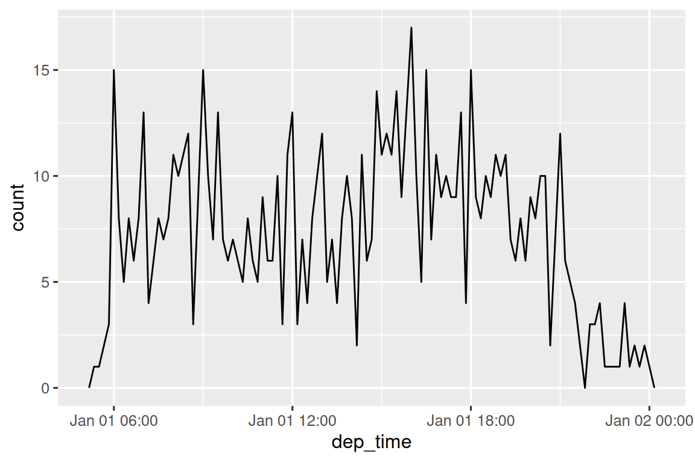
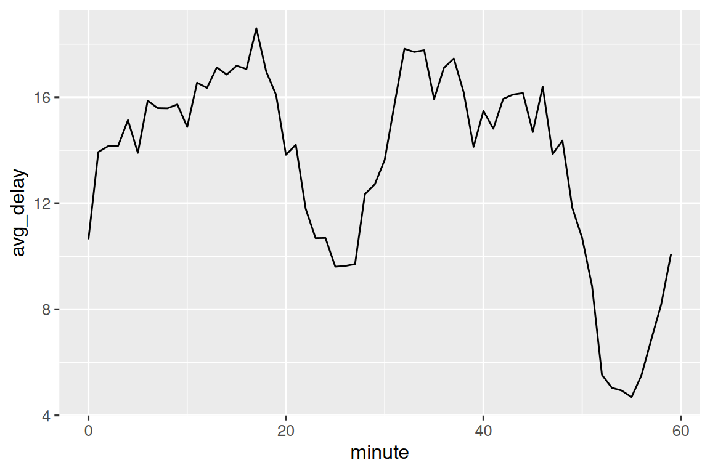
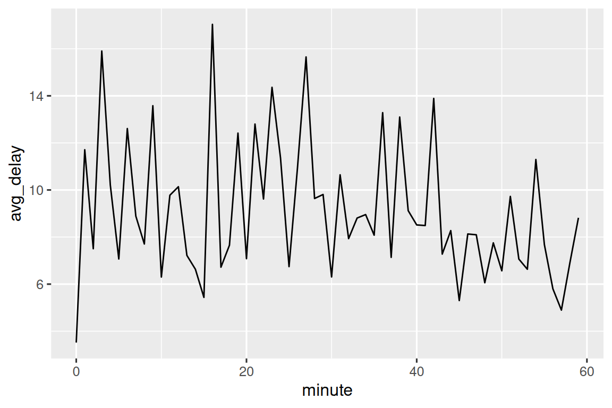
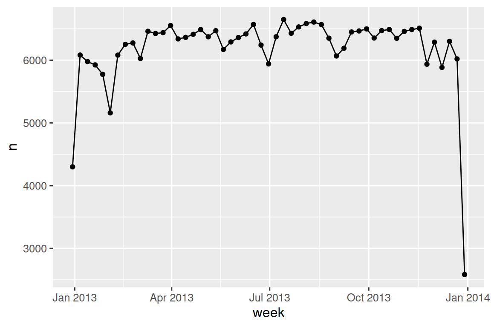
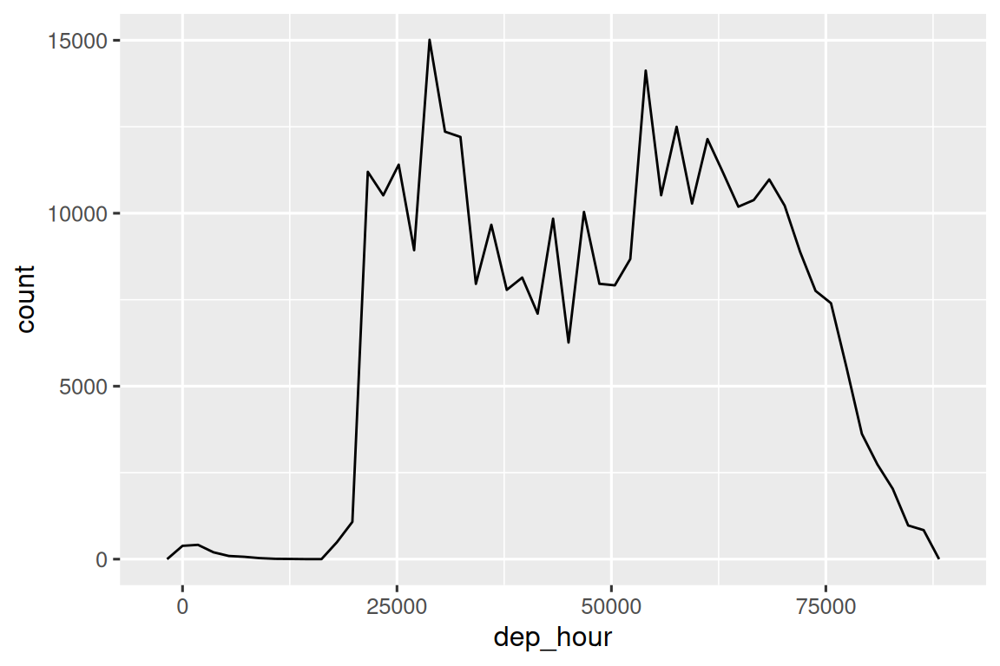

17 Fechas y horas
17.1 Introducción
Este capítulo le mostrará cómo trabajar con fechas y horas en R. A primera vista, las fechas y horas parecen simples. Los usa todo el tiempo en su vida normal y no parecen causar mucha confusión. Sin embargo, cuanto más aprendes sobre las fechas y las horas, ¡más complicadas parecen volverse!
Para entrar en calor, piensa en cuántos días hay en un año y cuántas horas hay en un día. Probablemente recordó que la mayoría de los años tienen 365 días, pero los años bisiestos tienen 366. ¿Conoces la regla completa para determinar si un año es bisiesto1? La cantidad de horas en un día es un poco menos obvia: la mayoría de los días tienen 24 horas, pero en lugares que usan el horario de verano (DST), un día cada año tiene 23 horas y otro tiene 25.
Las fechas y las horas son difíciles porque tienen que conciliar dos fenómenos físicos (la rotación de la Tierra y su órbita alrededor del sol) con toda una serie de fenómenos geopolíticos, incluidos los meses, las zonas horarias y el horario de verano. Este capítulo no le enseñará hasta el último detalle sobre fechas y horas, pero le brindará una base sólida de habilidades prácticas que lo ayudarán con los desafíos comunes de análisis de datos.
Comenzaremos mostrándole cómo crear fechas y horas a partir de varias entradas y luego, una vez que tenga una fecha y hora, cómo puede extraer componentes como año, mes y día. Luego nos sumergiremos en el tema complicado de trabajar con intervalos de tiempo, que vienen en una variedad de sabores dependiendo de lo que esté tratando de hacer. Concluiremos con una breve discusión de los desafíos adicionales que plantean las zonas horarias.
17.1.1 Requisitos previos
Este capítulo se centrará en el paquete lubridate, que facilita el trabajo con fechas y horas en R. A partir de la última versión de tidyverse, lubridate es parte del núcleo de tidyverse. También necesitaremos nycflights13 para datos de práctica.
17.2 Creando fecha/horas
Hay tres tipos de datos de fecha/hora que se refieren a un instante en el tiempo:
Una fecha. Tibbles imprime esto como
<date>.Una hora en un d’ia. Tibbles impreme esto como
<time>.Una fecha-hora es una fecha más una hora: identifica de manera única un instante en el tiempo (generalmente al segundo más cercano). Tibbles imprime esto como
<dttm>. Base R los llama POSIXct, pero no se sale de la lengua exactamente.
En este capítulo nos vamos a centrar en fechas y fechas y horas, ya que R no tiene una clase nativa para almacenar horas. Si necesita uno, puede usar el paquete hms.
Siempre debe usar el tipo de datos más simple posible que funcione para sus necesidades. Eso significa que si puede usar una fecha en lugar de una fecha y hora, debería hacerlo. Las fechas y horas son sustancialmente más complicadas debido a la necesidad de manejar las zonas horarias, a lo que volveremos al final del capítulo.
Para obtener la fecha actual o la fecha y hora, puede usar today() o now():
De lo contrario, las siguientes secciones describen las cuatro formas en las que es probable que cree una fecha/hora:
- Al leer un archivo con readr.
- De una cadena de caracteres.
- A partir de componentes individuales de fecha y hora.
- De un objeto de fecha/hora existente.
17.2.1 Durante la importación
Si su CSV contiene una fecha ISO8601 o una fecha y hora, no necesita hacer nada; readr lo reconocerá automáticamente:
csv <- "
date,datetime
2022-01-02,2022-01-02 05:12
"
read_csv(csv)
#> # A tibble: 1 × 2
#> date datetime
#> <date> <dttm>
#> 1 2022-01-02 2022-01-02 05:12:00Si no ha oído hablar de ISO8601 antes, es un estándar internacional2 para escribir fechas donde los componentes de una fecha se organizan de mayor a menor separados por -. Por ejemplo, en ISO8601 el 3 de mayo de 2022 es 2022-05-03. Las fechas ISO8601 también pueden incluir horas, donde la hora, el minuto y el segundo están separados por :, y los componentes de fecha y hora están separados por una T o un espacio. Por ejemplo, podría escribir 4:26 p. m. el 3 de mayo de 2022 como 2022-05-03 16:26 o 2022-05-03T16:26.
Para otros formatos de fecha y hora, necesitará usar col_types más col_date() o col_datetime() junto con un formato de fecha y hora. El formato de fecha y hora utilizado por readr es un estándar utilizado en muchos lenguajes de programación, que describe un componente de fecha con un % seguido de un solo carácter. Por ejemplo, %Y-%m-%d especifica una fecha que es un año, -, mes (como número) -, día. La tabla Tabla 17.1 enumera todas las opciones.
| Type | Code | Meaning | Example |
|---|---|---|---|
| Año | %Y |
año de 4 digitos | 2021 |
%y |
año de 2 digitos | 21 | |
| Mes | %m |
Número | 2 |
%b |
Nombre abreviado | Feb | |
%B |
Nombre completo | February | |
| Día | %d |
Uno o dos digitos | 2 |
%e |
Dos digitos | 02 | |
| Hora | %H |
Horas en 24-horas | 13 |
%I |
Horas en 12-horas | 1 | |
%p |
AM/PM | pm | |
%M |
Minutos | 35 | |
%S |
Segundos | 45 | |
%OS |
Segundos con componente decimal | 45.35 | |
%Z |
Nombre de la zona horaria | America/Chicago | |
%z |
Desplazamiento de UTC | +0800 | |
| Otros | %. |
Evitar un no digito | : |
%* |
Evitar cualquier número de no digitos |
Y este código muestra algunas opciones aplicadas a una fecha muy ambigua:
csv <- "
date
01/02/15
"
read_csv(csv, col_types = cols(date = col_date("%m/%d/%y")))
#> # A tibble: 1 × 1
#> date
#> <date>
#> 1 2015-01-02
read_csv(csv, col_types = cols(date = col_date("%d/%m/%y")))
#> # A tibble: 1 × 1
#> date
#> <date>
#> 1 2015-02-01
read_csv(csv, col_types = cols(date = col_date("%y/%m/%d")))
#> # A tibble: 1 × 1
#> date
#> <date>
#> 1 2001-02-15Tenga en cuenta que no importa cómo especifique el formato de fecha, siempre se muestra de la misma manera una vez que lo ingresa en R.
Si está utilizando %b o %B y trabaja con fechas que no están en inglés, también deberá proporcionar un locale(). Vea la lista de idiomas integrados en date_names_langs(), o cree el suyo propio con date_names().
17.2.2 De una cadena de caracteres
El lenguaje de especificación de fecha y hora es poderoso, pero requiere un análisis cuidadoso del formato de fecha. Un enfoque alternativo es usar los ayudantes de lubridate que intentan determinar automáticamente el formato una vez que especifica el orden del componente. Para usarlos, identifique el orden en que aparecen el año, el mes y el día en sus fechas, luego organice “y”, “m” y “d” en el mismo orden. Eso le da el nombre de la función lubridate que analizará su fecha. Por ejemplo:
ymd() y amigos crean fechas. Para crear una fecha y hora, agregue un guión bajo y uno o más de “h”, “m” y “s” al nombre de la función de análisis:
También puede forzar la creación de una fecha y hora a partir de una fecha proporcionando una zona horaria:
ymd("2017-01-31", tz = "UTC")
#> [1] "2017-01-31 UTC"Aquí utilizo la zona horaria UTC3 que también puede conocer como GMT, o Greenwich Mean Time, la hora en 0° de longitud4 . No utiliza el horario de verano, por lo que es un poco más fácil de calcular .
17.2.3 De componentes individuales
En lugar de una sola cadena, a veces tendrá los componentes individuales de la fecha y hora distribuidos en varias columnas. Esto es lo que tenemos en los datos de flights:
flights |>
select(year, month, day, hour, minute)
#> # A tibble: 336,776 × 5
#> year month day hour minute
#> <int> <int> <int> <dbl> <dbl>
#> 1 2013 1 1 5 15
#> 2 2013 1 1 5 29
#> 3 2013 1 1 5 40
#> 4 2013 1 1 5 45
#> 5 2013 1 1 6 0
#> 6 2013 1 1 5 58
#> # ℹ 336,770 more rowsPara crear una fecha/hora a partir de este tipo de entrada, usa make_date() para fechas, o make_datetime() para fechas y horas:
flights |>
select(year, month, day, hour, minute) |>
mutate(departure = make_datetime(year, month, day, hour, minute))
#> # A tibble: 336,776 × 6
#> year month day hour minute departure
#> <int> <int> <int> <dbl> <dbl> <dttm>
#> 1 2013 1 1 5 15 2013-01-01 05:15:00
#> 2 2013 1 1 5 29 2013-01-01 05:29:00
#> 3 2013 1 1 5 40 2013-01-01 05:40:00
#> 4 2013 1 1 5 45 2013-01-01 05:45:00
#> 5 2013 1 1 6 0 2013-01-01 06:00:00
#> 6 2013 1 1 5 58 2013-01-01 05:58:00
#> # ℹ 336,770 more rowsHagamos lo mismo para cada una de las cuatro columnas de tiempo en flights. Los tiempos se representan en un formato ligeramente extraño, por lo que usamos aritmética de módulo para extraer los componentes de hora y minuto. Una vez que hayamos creado las variables de fecha y hora, nos centraremos en las variables que exploraremos en el resto del capítulo.
make_datetime_100 <- function(year, month, day, time) {
make_datetime(year, month, day, time %/% 100, time %% 100)
}
flights_dt <- flights |>
filter(!is.na(dep_time), !is.na(arr_time)) |>
mutate(
dep_time = make_datetime_100(year, month, day, dep_time),
arr_time = make_datetime_100(year, month, day, arr_time),
sched_dep_time = make_datetime_100(year, month, day, sched_dep_time),
sched_arr_time = make_datetime_100(year, month, day, sched_arr_time)
) |>
select(origin, dest, ends_with("delay"), ends_with("time"))
flights_dt
#> # A tibble: 328,063 × 9
#> origin dest dep_delay arr_delay dep_time sched_dep_time
#> <chr> <chr> <dbl> <dbl> <dttm> <dttm>
#> 1 EWR IAH 2 11 2013-01-01 05:17:00 2013-01-01 05:15:00
#> 2 LGA IAH 4 20 2013-01-01 05:33:00 2013-01-01 05:29:00
#> 3 JFK MIA 2 33 2013-01-01 05:42:00 2013-01-01 05:40:00
#> 4 JFK BQN -1 -18 2013-01-01 05:44:00 2013-01-01 05:45:00
#> 5 LGA ATL -6 -25 2013-01-01 05:54:00 2013-01-01 06:00:00
#> 6 EWR ORD -4 12 2013-01-01 05:54:00 2013-01-01 05:58:00
#> # ℹ 328,057 more rows
#> # ℹ 3 more variables: arr_time <dttm>, sched_arr_time <dttm>, …Con estos datos, podemos visualizar la distribución de los horarios de salida a lo largo del año:
flights_dt |>
ggplot(aes(x = dep_time)) +
geom_freqpoly(binwidth = 86400) # 86400 seconds = 1 day
O dentro de un solo día:
flights_dt |>
filter(dep_time < ymd(20130102)) |>
ggplot(aes(x = dep_time)) +
geom_freqpoly(binwidth = 600) # 600 s = 10 minutes
Tenga en cuenta que cuando usa fecha y hora en un contexto numérico (como en un histograma), 1 significa 1 segundo, por lo que un ancho de bin de 86400 significa un día. Para fechas, 1 significa 1 día.
17.2.4 De otros tipos
Es posible que desee cambiar entre una fecha y hora y una fecha. Ese es el trabajo de as_datetime() y as_date():
as_datetime(today())
#> [1] "2025-08-05 UTC"
as_date(now())
#> [1] "2025-08-05"A veces obtendrá la fecha/hora como compensaciones numéricas de la “época de Unix”, 1970-01-01. Si el desplazamiento está en segundos, use as_datetime(); si es en días, usa as_date().
as_datetime(60 * 60 * 10)
#> [1] "1970-01-01 10:00:00 UTC"
as_date(365 * 10 + 2)
#> [1] "1980-01-01"17.2.5 Ejercicios
-
¿Qué sucede si analiza una cadena que contiene fechas no válidas?
¿Qué hace el argumento
tzoneparatoday()? ¿Por qué es importante?-
Para cada una de las siguientes fechas y horas, muestre cómo las analizaría utilizando una especificación de columna readr y una función lubridate.
d1 <- "January 1, 2010" d2 <- "2015-Mar-07" d3 <- "06-Jun-2017" d4 <- c("August 19 (2015)", "July 1 (2015)") d5 <- "12/30/14" # Dec 30, 2014 t1 <- "1705" t2 <- "11:15:10.12 PM"
17.3 Componentes de fecha y hora
Ahora que sabe cómo obtener datos de fecha y hora en las estructuras de datos de fecha y hora de R, exploremos qué puede hacer con ellos. Esta sección se centrará en las funciones de acceso que le permiten obtener y configurar componentes individuales. La siguiente sección verá cómo funciona la aritmética con fechas y horas.
17.3.1 Obtener componentes
Puede extraer partes individuales de la fecha con las funciones de acceso year(), month(), mday() (día del mes), yday() (día del año), wday() (día de la semana), hour(), minute() y second(). Estos son efectivamente los opuestos de make_datetime().
Para month() y wday() puede configurar label = TRUE para devolver el nombre abreviado del mes o día de la semana. Establezca abbr = FALSE para devolver el nombre completo.
Podemos usar wday() para ver que salen más vuelos durante la semana que el fin de semana:
También podemos ver el retraso de salida promedio por minuto dentro de la hora. Hay un patrón interesante: ¡los vuelos que salen en los minutos 20-30 y 50-60 tienen retrasos mucho menores que el resto de la hora!
flights_dt |>
mutate(minute = minute(dep_time)) |>
group_by(minute) |>
summarize(
avg_delay = mean(dep_delay, na.rm = TRUE),
n = n()
) |>
ggplot(aes(x = minute, y = avg_delay)) +
geom_line()
Curiosamente, si observamos la hora de salida programada, no vemos un patrón tan fuerte:
sched_dep <- flights_dt |>
mutate(minute = minute(sched_dep_time)) |>
group_by(minute) |>
summarize(
avg_delay = mean(arr_delay, na.rm = TRUE),
n = n()
)
ggplot(sched_dep, aes(x = minute, y = avg_delay)) +
geom_line()
Entonces, ¿por qué vemos ese patrón con los horarios de salida reales? Bueno, como gran parte de los datos recopilados por humanos, hay un fuerte sesgo hacia los vuelos que salen en “buenos” horarios de salida, como muestra Figura 17.1. ¡Esté siempre alerta a este tipo de patrón cada vez que trabaje con datos que involucran el juicio humano!
17.3.2 Redondeo
Un enfoque alternativo para trazar componentes individuales es redondear la fecha a una unidad de tiempo cercana, con floor_date(), round_date() y ceiling_date(). Cada función toma un vector de fechas para ajustar y luego el nombre de la unidad redondea hacia abajo (floor), redondea hacia arriba (ceiling) o redondea a. Esto, por ejemplo, nos permite graficar el número de vuelos por semana:
flights_dt |>
count(week = floor_date(dep_time, "week")) |>
ggplot(aes(x = week, y = n)) +
geom_line() +
geom_point()
Puede usar el redondeo para mostrar la distribución de vuelos a lo largo de un día calculando la diferencia entre dep_time y el primer instante de ese día:
flights_dt |>
mutate(dep_hour = dep_time - floor_date(dep_time, "day")) |>
ggplot(aes(x = dep_hour)) +
geom_freqpoly(binwidth = 60 * 30)
#> Don't know how to automatically pick scale for object of type <difftime>.
#> Defaulting to continuous.
Calcular la diferencia entre un par de fechas y horas produce un tiempo de diferencia (más sobre eso en Sección 17.4.3). Podemos convertir eso en un objeto hms para obtener un eje x más útil:
flights_dt |>
mutate(dep_hour = hms::as_hms(dep_time - floor_date(dep_time, "day"))) |>
ggplot(aes(x = dep_hour)) +
geom_freqpoly(binwidth = 60 * 30)
17.3.3 Modificación de componentes
También puede utilizar cada función de acceso para modificar los componentes de una fecha/hora. Esto no aparece mucho en el análisis de datos, pero puede ser útil cuando se limpian datos que tienen fechas claramente incorrectas.
Alternativamente, en lugar de modificar una variable existente, puede crear una nueva fecha y hora con update(). Esto también le permite establecer múltiples valores en un solo paso:
update(datetime, year = 2030, month = 2, mday = 2, hour = 2)
#> [1] "2030-02-02 02:34:56 UTC"Si los valores son demasiado grandes, se transferirán:
17.3.4 Ejercicios
¿Cómo cambia la distribución de los tiempos de vuelo dentro de un día a lo largo del año?
Compara
dep_time,sched_dep_timeydep_delay. ¿Son consistentes? Explique sus hallazgos.Compara
air_timecon la duración entre la salida y la llegada. Explique sus hallazgos. (Sugerencia: considere la ubicación del aeropuerto).¿Cómo cambia el tiempo de demora promedio en el transcurso de un día? ¿Deberías usar
dep_timeosched_dep_time? ¿Por qué?¿Qué día de la semana debe salir si quiere minimizar la posibilidad de un retraso?
¿Qué hace que la distribución de
diamonds$caratyflights$sched_dep_timesea similar?Confirme nuestra hipótesis de que las salidas anticipadas de vuelos en los minutos 20-30 y 50-60 son causadas por vuelos programados que salen temprano. Sugerencia: cree una variable binaria que le indique si un vuelo se retrasó o no.
17.4 Intervalos de tiempo
A continuación, aprenderá cómo funciona la aritmética con fechas, incluidas la resta, la suma y la división. En el camino, aprenderá acerca de tres clases importantes que representan períodos de tiempo:
- Duración, que representa un número exacto de segundos.
- Períodos, que representan unidades humanas como semanas y meses.
- Intervalos, que representan un punto inicial y final.
¿Cómo eliges entre duración, períodos e intervalos? Como siempre, elija la estructura de datos más simple que resuelva su problema. Si solo te importa el tiempo físico, usa una duración; si necesita agregar tiempos humanos, use un período; si necesita averiguar cuánto mide un lapso en unidades humanas, use un intervalo.
17.4.1 Duraciones
En R, cuando restas dos fechas, obtienes un objeto difftime:
Un objeto de clase difftime registra un lapso de tiempo de segundos, minutos, horas, días o semanas. Esta ambigüedad puede hacer que trabajar con difftimes sea un poco doloroso, por lo que lubridate ofrece una alternativa que siempre usa segundos: la duración.
as.duration(h_age)
#> [1] "1445644800s (~45.81 years)"Las duraciones vienen con un montón de constructoras convenientes:
dseconds(15)
#> [1] "15s"
dminutes(10)
#> [1] "600s (~10 minutes)"
dhours(c(12, 24))
#> [1] "43200s (~12 hours)" "86400s (~1 days)"
ddays(0:5)
#> [1] "0s" "86400s (~1 days)" "172800s (~2 days)"
#> [4] "259200s (~3 days)" "345600s (~4 days)" "432000s (~5 days)"
dweeks(3)
#> [1] "1814400s (~3 weeks)"
dyears(1)
#> [1] "31557600s (~1 years)"Las duraciones siempre registran el lapso de tiempo en segundos. Las unidades más grandes se crean al convertir minutos, horas, días, semanas y años en segundos: 60 segundos en un minuto, 60 minutos en una hora, 24 horas en un día y 7 días en una semana. Las unidades de tiempo más grandes son más problemáticas. Un año utiliza el número “promedio” de días en un año, es decir, 365,25. No hay forma de convertir un mes en una duración, porque hay demasiada variación.
Puedes sumar y multiplicar duraciones:
Puede sumar y restar duraciones desde y hacia días:
Sin embargo, debido a que las duraciones representan una cantidad exacta de segundos, a veces puede obtener un resultado inesperado:
¿Por qué un día después de la 1 a. m. es el 8 de marzo y a las 2 a. m. el 9 de marzo? Si observa detenidamente la fecha, también puede notar que las zonas horarias han cambiado. El 8 de marzo solo tiene 23 horas porque es cuando comienza el horario de verano, por lo que si agregamos un día completo en segundos, terminamos con una hora diferente.
17.4.2 Períodos
Para resolver este problema, lubridate proporciona períodos. Los períodos son lapsos de tiempo, pero no tienen una duración fija en segundos, sino que funcionan con tiempos “humanos”, como días y meses. Eso les permite trabajar de una manera más intuitiva:
one_am
#> [1] "2026-03-08 01:00:00 EST"
one_am + days(1)
#> [1] "2026-03-09 01:00:00 EDT"Al igual que las duraciones, los períodos se pueden crear con una serie de funciones constructoras amigables.
Puede sumar y multiplicar períodos:
Y por supuesto, añádelos a las fechas. En comparación con las duraciones, es más probable que los períodos hagan lo que esperas:
Usemos períodos para arreglar una rareza relacionada con nuestras fechas de vuelo. Algunos aviones parecen haber llegado a su destino antes de partir de la ciudad de Nueva York.
flights_dt |>
filter(arr_time < dep_time)
#> # A tibble: 10,633 × 9
#> origin dest dep_delay arr_delay dep_time sched_dep_time
#> <chr> <chr> <dbl> <dbl> <dttm> <dttm>
#> 1 EWR BQN 9 -4 2013-01-01 19:29:00 2013-01-01 19:20:00
#> 2 JFK DFW 59 NA 2013-01-01 19:39:00 2013-01-01 18:40:00
#> 3 EWR TPA -2 9 2013-01-01 20:58:00 2013-01-01 21:00:00
#> 4 EWR SJU -6 -12 2013-01-01 21:02:00 2013-01-01 21:08:00
#> 5 EWR SFO 11 -14 2013-01-01 21:08:00 2013-01-01 20:57:00
#> 6 LGA FLL -10 -2 2013-01-01 21:20:00 2013-01-01 21:30:00
#> # ℹ 10,627 more rows
#> # ℹ 3 more variables: arr_time <dttm>, sched_arr_time <dttm>, …Estos son vuelos nocturnos. Utilizamos la misma información de fecha tanto para la hora de salida como para la de llegada, pero estos vuelos llegaron al día siguiente. Podemos arreglar esto agregando días (1) a la hora de llegada de cada vuelo nocturno.
Ahora todos nuestros vuelos obedecen las leyes de la física.
flights_dt |>
filter(overnight, arr_time < dep_time)
#> # A tibble: 0 × 10
#> # ℹ 10 variables: origin <chr>, dest <chr>, dep_delay <dbl>,
#> # arr_delay <dbl>, dep_time <dttm>, sched_dep_time <dttm>, …17.4.3 Intervalos
¿Qué devuelve dyears(1) / ddays(365)? No es exactamente uno, porque dyear() se define como el número de segundos por año promedio, que son 365,25 días.
¿Qué devuelve years(1) / days(1)? Bueno, si el año fue 2015, debería devolver 365, pero si fue 2016, ¡debería devolver 366! No hay suficiente información sobre lubridate para dar una sola respuesta clara. Lo que hace en cambio es dar una estimación:
Si desea una medición más precisa, deberá usar un intervalo. Un intervalo es un par de fechas de inicio y finalización, o puede considerarlo como una duración con un punto de inicio.
Puede crear un intervalo escribiendo start %--% end:
Luego podrías dividirlo por days() para averiguar cuántos días caben en el año:
17.4.4 Ejercicios
Explique
days(!overnight)ydays(overnight)a alguien que acaba de empezar a aprender R. ¿Cuál es el hecho clave que necesita saber?Cree un vector de fechas que proporcione el primer día de cada mes en 2015. Cree un vector de fechas que proporcione el primer día de cada mes en el año actual.
Escribe una función que, dado tu cumpleaños (como una fecha), devuelva la edad que tienes en años.
¿Por qué
(today() %--% (today() + years(1))) / months(1)no puede funcionar?
17.5 Zonas horarias
Las zonas horarias son un tema enormemente complicado debido a su interacción con las entidades geopolíticas. Afortunadamente, no necesitamos profundizar en todos los detalles, ya que no todos son importantes para el análisis de datos, pero hay algunos desafíos que debemos abordar de frente.
El primer desafío es que los nombres cotidianos de las zonas horarias tienden a ser ambiguos. Por ejemplo, si es estadounidense, probablemente esté familiarizado con EST u Hora estándar del este. Sin embargo, ¡tanto Australia como Canadá también tienen EST! Para evitar confusiones, R utiliza las zonas horarias estándar internacionales de la IANA. Estos usan un esquema de nomenclatura consistente {área}/{ubicación}, normalmente en la forma {continente}/{ciudad} o {océano}/{ciudad}. Los ejemplos incluyen “America/Nueva_York”, “Europe/Paris” y “Pacific/Auckland”.
Quizás se pregunte por qué la zona horaria usa una ciudad, cuando normalmente piensa en las zonas horarias como asociadas con un país o una región dentro de un país. Esto se debe a que la base de datos de la IANA tiene que registrar décadas de reglas de zonas horarias. A lo largo de las décadas, los países cambian de nombre (o se separan) con bastante frecuencia, pero los nombres de las ciudades tienden a permanecer igual. Otro problema es que el nombre debe reflejar no solo el comportamiento actual, sino también el historial completo. Por ejemplo, hay zonas horarias tanto para “America/Nueva_York” como para “America/Detroit”. Ambas ciudades utilizan actualmente la hora estándar del este, pero en 1969-1972 Michigan (el estado en el que se encuentra Detroit) no siguió el horario de verano, por lo que necesita un nombre diferente. ¡Vale la pena leer la base de datos de zonas horarias sin procesar (disponible en https://www.iana.org/time-zones) solo para leer algunas de estas historias!
Puedes averiguar cuál cree R que es tu zona horaria actual con Sys.timezone():
Sys.timezone()
#> [1] "UTC"(Si R no lo sabe, obtendrá una NA.)
Y vea la lista completa de todos los nombres de zonas horarias con OlsonNames():
length(OlsonNames())
#> [1] 598
head(OlsonNames())
#> [1] "Africa/Abidjan" "Africa/Accra" "Africa/Addis_Ababa"
#> [4] "Africa/Algiers" "Africa/Asmara" "Africa/Asmera"En R, la zona horaria es un atributo de la fecha-hora que solo controla la impresión. Por ejemplo, estos tres objetos representan el mismo instante en el tiempo:
Puedes verificar que son la misma hora usando la resta:
x1 - x2
#> Time difference of 0 secs
x1 - x3
#> Time difference of 0 secsA menos que se especifique lo contrario, lubridate siempre usa UTC. UTC (Tiempo Universal Coordinado) es la zona horaria estándar utilizada por la comunidad científica y es aproximadamente equivalente a GMT (Greenwich Mean Time). No tiene DST, lo que hace una representación conveniente para el cálculo. Las operaciones que combinan fechas y horas, como c(), a menudo eliminarán la zona horaria. En ese caso, las fechas y horas se mostrarán en la zona horaria del primer elemento:
x4 <- c(x1, x2, x3)
x4
#> [1] "2024-06-01 12:00:00 EDT" "2024-06-01 12:00:00 EDT"
#> [3] "2024-06-01 12:00:00 EDT"Puede cambiar la zona horaria de dos maneras:
-
Mantenga el instante en el tiempo igual y cambie la forma en que se muestra. Use esto cuando el instante sea correcto, pero desee una visualización más natural.
x4a <- with_tz(x4, tzone = "Australia/Lord_Howe") x4a #> [1] "2024-06-02 02:30:00 +1030" "2024-06-02 02:30:00 +1030" #> [3] "2024-06-02 02:30:00 +1030" x4a - x4 #> Time differences in secs #> [1] 0 0 0(Esto también ilustra otro desafío de las zonas horarias: ¡no todas son compensaciones de horas enteras!)
-
Cambia el instante subyacente en el tiempo. Usa esto cuando tengas un instante que ha sido etiquetado con la zona horaria incorrecta y necesites corregirlo.
x4b <- force_tz(x4, tzone = "Australia/Lord_Howe") x4b #> [1] "2024-06-01 12:00:00 +1030" "2024-06-01 12:00:00 +1030" #> [3] "2024-06-01 12:00:00 +1030" x4b - x4 #> Time differences in hours #> [1] -14.5 -14.5 -14.5
17.6 Resumen
Este capítulo le ha presentado las herramientas que proporciona lubridate para ayudarle a trabajar con datos de fecha y hora. Trabajar con fechas y horas puede parecer más difícil de lo necesario, pero espero que este capítulo le haya ayudado a ver por qué: las fechas y horas son más complejas de lo que parecen a primera vista, y el manejo de todas las situaciones posibles agrega complejidad. Incluso si sus datos nunca cruzan un límite de ahorro de luz diurna o involucran un año bisiesto, las funciones deben poder manejarlo.
El siguiente capítulo ofrece un resumen de los valores perdidos. Los ha visto en algunos lugares y sin duda los ha encontrado en su propio análisis, y ahora es el momento de proporcionar una bolsa de sorpresas con técnicas útiles para tratar con ellos.
Un año es bisiesto si es divisible por 4, a menos que también sea divisible por 100, excepto si también es divisible por 400. En otras palabras, en cada conjunto de 400 años, hay 97 años bisiestos.↩︎
Quizás se pregunte qué significa UTC. Es un compromiso entre el “Coordinated Universal Time” inglés y el “Temps Universel Coordonné” francés.↩︎
No hay premios por adivinar a qué país se le ocurrió el sistema de longitud.↩︎